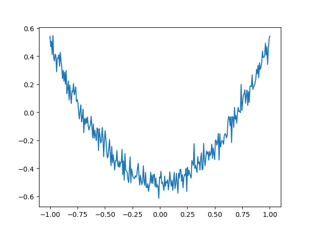

前言： 首先， 这些代码是网上有的， 现在正处理刚开始学习TensorFlow的阶段， 所以将网上的demo分步理解的过程整理了下， 损失函数这一块还不是很了解。
生成函数图
生成x轴数据
# np.linspace
# 在指定的间隔内返回均匀间隔的数字
# np.newaxis()
# 插入新维度， 在使用功能上等价于None, 其实就是None的一个别名, 可以用None代替
# 生成一个 [[-1] [-0.9...]...[...], [1]] 的 300行1列 矩阵
x_data = np.linspace(-1, 1, 300)[:, np.newaxis]
|
生成噪点
# 加噪点， 标准方差为 0.05
# np.random.normal(size,loc,scale):
# 给出均值为loc，标准差为scale的高斯随机数（场）
# [[xxxe-02][xxxe-02][xxxe-02]...] size和x_data一致
noise = np.random.normal(0, 0.05, x_data.shape)
|
生成y轴数据
# y = x^2 - 0.5 + noise
y_data = np.square(x_data) - 0.5 + noise
|
绘图
fig = plt.figure()
ax = fig.add_subplot(1,1,1)
# ax.scatter(x_data, y_data)
plt.plot(x_data, y_data)
# plt.ion() # 不暂停
plt.show()
|

散点图
plt.scatter(x_data, y_data)
定义隐藏层
def add_layer(inputs, in_size, out_size, activation_function = None):
# 权值
w = tf.Variable(tf.random_normal([in_size, out_size]))
# 偏置
b = tf.Variable(tf.zeros([1, out_size]) + 0.1)
z = tf.matmul(inputs, w) + b
if activation_function is None:
outputs = z
else:
outputs = activation_function(z)
return outputs
|
函数
tensorflow
tf.random_normal(shape, mean=0.0, stddev=1.0, dtype=tf.float32, seed=None, name=None)
- 从服从指定正太分布的数值中取出指定个数的值
- shape: 输出张量的形状，必选
- mean: 正态分布的均值，默认为0
- stddev: 正态分布的标准差，默认为1.0
- dtype: 输出的类型，默认为tf.float32
- seed: 随机数种子，是一个整数，当设置之后，每次生成的随机数都一样
- name: 操作的名称
tf.zeros(shape, dtype=tf.float32, name=None)
- 创建一个所有元素都设置为零的张量
- tf.zeros([3, 4], tf.int32) # [[0, 0, 0, 0], [0, 0, 0, 0], [0, 0, 0, 0]]
tf.matmul(a, b, transpose_a=False, transpose_b=False, adjoint_a=False, adjoint_b=False, a_is_sparse=False, b_is_sparse=False, name=None)
tf.placeholder(dtype, shape=None, name=None)
- dtype：数据类型。常用的是tf.float32,tf.float64等数值类型
- shape：数据形状。默认是None，就是一维值，也可以是多维（比如[2,3], [None, 3]表示列是3，行不定）
- name：名称
tf.nn.relu(features, name = None)
- 计算激活函数 relu，即 max(features, 0)。即将矩阵中每行的非最大值置0
tf.reduce_mean(input_tensor, axis=None, keep_dims=False, name=None, reduction_indices=None)
- 用于计算张量tensor沿着指定的数轴（tensor的某一维度）上的的平均值，主要用作降维或者计算tensor（图像）的平均值
- input_tensor： 输入的待降维的tensor
- axis： 指定的轴，如果不指定，则计算所有元素的均值
- keep_dims：是否降维度，设置为True，输出的结果保持输入tensor的形状，设置为False，输出结果会降低维度
- name： 操作的名称
- reduction_indices：在以前版本中用来指定轴，已弃用
tf.reduce_sum
tf.square(x, name=None)
numpy
np.random.normal(loc=0.0, scale=1.0, size=None)
- 给出均值为loc，标准差为scale的高斯随机数（场）
- loc：float 此概率分布的均值（对应着整个分布的中心centre）
- scale：float此概率分布的标准差（对应于分布的宽度，scale越大越矮胖，scale越小，越瘦高）
- size：int or tuple of ints 输出的shape，默认为None，只输出一个值
所谓标准正态分布（μ=0,σ=1，对应于np.random.normal(loc=0, scale=1, size)
整体代码
'''
创建一元二次方程 y = x^2 -0.5
为了更加符合散点图模拟需要，在方程中加噪点，
标准方差为0.05
要计算机自动拟合出该散点图的函数， 画出图样
'''
# 引入
import tensorflow as tf
import numpy as np
import matplotlib.pyplot as plt
# 定义隐藏层
def add_layer(inputs, in_size, out_size, activation_function = None):
# 权值
w = tf.Variable(tf.random_normal([in_size, out_size]))
# 偏置
b = tf.Variable(tf.zeros([1, out_size]) + 0.1)
z = tf.matmul(inputs, w) + b
if activation_function is None:
outputs = z
else:
outputs = activation_function(z)
return outputs
x_data = np.linspace(-1, 1, 300)[:, np.newaxis]
# 加噪点， 标准方差为 0.05
noise = np.random.normal(0, 0.05, x_data.shape)
# y = x^2 - 0.5 + noise
y_data = np.square(x_data) - 0.5 + noise
# train_step所要输入的值
xs = tf.placeholder(tf.float32, [None, 1])
ys = tf.placeholder(tf.float32, [None, 1])
# 建立第一次隐藏层layer
# 激励函数 (activation_function)ReLU
l1 = add_layer(xs, 1, 10, activation_function = tf.nn.relu)
# 第二层
l2 = add_layer(l1, 10, 1, activation_function = None)
# 创建损失函数
loss = tf.reduce_mean(tf.reduce_sum(tf.square(ys - l2), reduction_indices = [1]))
# 梯度下降
train_step = tf.train.GradientDescentOptimizer(0.1).minimize(loss)
init = tf.initialize_all_variables()
sess = tf.Session()
sess.run(init)
# print(noise)
# 绘图部分
fig = plt.figure()
ax = fig.add_subplot(1,1,1)
ax.scatter(x_data, y_data)
# plt.scatter(x_data, y_data)
plt.ion() # 不暂停, 一直绘制
plt.show()
# 学习1000步
for i in range(1000):
sess.run(train_step, feed_dict = {xs: x_data, ys: y_data})
if i % 50 == 0:
# 打印误差
print(sess.run(loss, feed_dict = {xs: x_data, ys: y_data}))
try:
ax.lines.remove(lines[0])
except Exception:
pass
l2_value = sess.run(l2, feed_dict = {xs: x_data})
lines = ax.plot(x_data, l2_value, 'r', lw = 5)
plt.pause(0.1)
|
解决报错
- import matplotlib.pyplot as plt